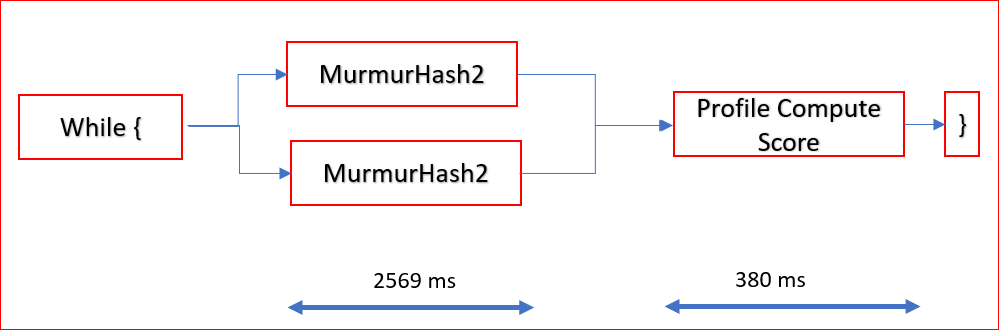
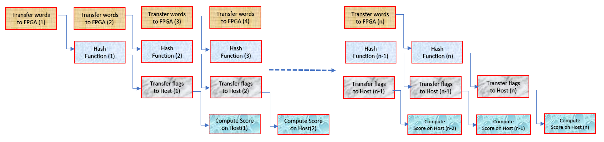

Vitis Hardware AccelerationSee Vitis™ Development Environment on xilinx.com |
Architect a Device-Accelerated Application¶
In this lab, you evaluate the available functions or loops from the original C code, and identify which functions to target for FPGA acceleration. You must manually review the code, loop structure, and access patterns before actually running any tool.
Identify Functions to Accelerate on the FPGA¶
In the 02-bloom/cpu_src directory, the main function calls the runOnCPU function. This function is implemented in the 02-bloom/cpu_src/compute_score_host.cpp file.
The algorithm can be divided into two sections:
Computing output flags created from the hash function of every word in all documents.
Computing document score based on output flags created in the previous section.
You will evaluate which of these sections are a good fit for the FPGA.
Evaluate the MurmurHash2 Function¶
Navigate to the
$LAB_WORK_DIR/cpu_srcdirectory for the original source code.With a file editor, open the
MurmurHash2.cfile.Review the following
MurmurHash2hash function code.unsigned int MurmurHash2 ( const void * key, int len, unsigned int seed ) { const unsigned int m = 0x5bd1e995; // Initialize the hash to a 'random' value unsigned int h = seed ^ len; // Mix 4 bytes at a time into the hash const unsigned char * data = (const unsigned char *)key; switch(len) { case 3: h ^= data[2] << 16; case 2: h ^= data[1] << 8; case 1: h ^= data[0]; h *= m; }; // Do a few final mixes of the hash to ensure the last few // bytes are well-incorporated. h ^= h >> 13; h *= m; h ^= h >> 15; return h; }
The computational complexity is the number of basic computing operations required to execute the function.
The compute of the hash for a single word ID consists of four XORs, three arithmetic shifts, and two multiplication operations.
A shift of 1-bit in an arithmetic shift operation takes one clock cycle on the CPU.
The three arithmetic operations shift a total of 44-bits (when
len=3in the above code) to compute the hash that requires 44 clock cycles just to shift the bits on the host CPU.On the FPGA, you can create custom architectures, and therefore, create an accelerator that will shift the data by an arbitrary number of bits in a single clock cycle.
The FPGA also has dedicated DSP units that perform multiplications faster than the CPU. Even though the CPU runs at a frequency eight times higher than the FPGA, the arithmetic shift and multiplication operations can perform faster on the FPGA because of the customizable hardware architecture.
Therefore, this function is a good candidate for FPGA acceleration.
Evaluate the First “for” Loop in the runCPU Function—”Hash” Functionality¶
Open
compute_score_host.cppfile in the file editor.Look at the following code at lines 32 through 58 that computes the output flags.
// Compute output flags based on hash function output for the words in all documents for(unsigned int doc=0;doc<total_num_docs;doc++) { profile_score[doc] = 0.0; unsigned int size = doc_sizes[doc]; for (unsigned i = 0; i < size ; i++) { unsigned curr_entry = input_doc_words[size_offset+i]; unsigned word_id = curr_entry >> 8; unsigned hash_pu = MurmurHash2( &word_id , 3,1); unsigned hash_lu = MurmurHash2( &word_id , 3,5); bool doc_end = (word_id==docTag); unsigned hash1 = hash_pu&hash_bloom; bool inh1 = (!doc_end) && (bloom_filter[ hash1 >> 5 ] & ( 1 << (hash1 & 0x1f))); unsigned hash2 = (hash_pu+hash_lu)&hash_bloom; bool inh2 = (!doc_end) && (bloom_filter[ hash2 >> 5 ] & ( 1 << (hash2 & 0x1f))); if (inh1 && inh2) { inh_flags[size_offset+i]=1; } else { inh_flags[size_offset+i]=0; } } size_offset+=size; }
From this code, you can see:
You are computing two hash outputs for each word in all the documents and creating output flags accordingly.
You already determined that the hash function(
MurmurHash2()) is a good candidate for acceleration on the FPGA.The hash (
MurmurHash2()) function with one word is independent of other words and can be done in parallel which improves the execution time.The algorithm sequentially accesses to the
input_doc_wordsarray. This is an important property because when implemented in the FPGA, it allows for very efficient accesses to the DDR.
This code section is a good candidate for FPGA acceleration because the hash function can run faster on the FPGA, and you can compute hashes for multiple words in parallel by reading multiple words from the DDR in burst mode.
Now, you are ready to review the second for loop.
Keep
compute_score_host.cppopen in the file editor.
Evaluate the Second “for” Loop in the runOnCPU Function—”Profile Compute Score” Functionality¶
Look at the following code that computes the document score.
for(unsigned int doc=0, n=0; doc<total_num_docs;doc++) { profile_score[doc] = 0.0; unsigned int size = doc_sizes[doc]; for (unsigned i = 0; i < size ; i++,n++) { if (inh_flags[n]) { unsigned curr_entry = input_doc_words[n]; unsigned frequency = curr_entry & 0x00ff; unsigned word_id = curr_entry >> 8; profile_score[doc]+= profile_weights[word_id] * (unsigned long)frequency; } } }
The compute score requires one memory access to
profile_weights, one accumulation, and one multiplication operation.The memory accesses are random because they depend on the
word_idand therefore, the content of each document.The size of the
profile_weightsarray is 128 MB and must be stored in the DDR memory connected to the FPGA. Non-sequential accesses to DDR are big performance bottlenecks. Because accesses to theprofile_weightsarray are random, implementing this function on the FPGA would not provide much performance benefit, and because the function takes only about 11% of the total running time, you can keep this function on the host CPU.Based on this analysis, it is only beneficial to accelerate the Compute Output Flags from the Hash section on the FPGA. The execution of the Compute Document Score section can be kept on the host CPU.
Close the file editor.
Establish the Realistic Goal for the Overall Application¶
The Compute Score function is calculated on the CPU. Based on your calculations in the previous lab, it takes about 380 ms. You cannot accelerate the function further for a given CPU. Even if the FPGA can compute the hash function in zero time, the application will still take at the minimum of 380 ms, but running the FPGA in no time is also not realistic. You also need to account for sending the data from the CPU to the FPGA and retrieving it back to the CPU from the FPGA which will also add a delay.
Set the goal for the application such that the Compute Hash function (in Hardware) should run as fast as the Compute Score on the CPU so that the hash function does not become the bottleneck.
Use 100,000 input documents for your calculations. This is the equivalent of 350M words with approximately 3,500 words per document.
Keep only the compute hash function in the FPGA. In software, this function takes about 2569 ms.
The goal of application has been established to compute the hashes and overall score of the 10,000 documents in about 380 ms.
Determine the Maximum Achievable Throughput¶
In most FPGA-accelerated systems, the maximum achievable throughput is limited by the PCIe® bus. The PCIe bus performance is influenced by many different aspects, such as the motherboard, drivers, targeted shell, and transfer sizes. The Vitis core development kit provides a utility, xbutil.
Run the xbutil validate command to measure the maximum PCIe bandwidth that can be achieved. The throughput on your design target cannot exceed this upper limit.
The xbutil validate command produces the following output.
Host -> PCIe -> FPGA write bandwidth = 8485.43 MB/s
Host <- PCIe <- FPGA read bandwidth = 12164.4 MB/s
Data Validity & DMA Test on bank1
Host -> PCIe -> FPGA write bandwidth = 9566.47 MB/s
Host <- PCIe <- FPGA read bandwidth = 12155.7 MB/s
Data Validity & DMA Test on bank2
Host -> PCIe -> FPGA write bandwidth = 8562.48 MB/s
Host <- PCIe <- FPGA read bandwidth = 12154.5 MB/s
The PCIe FPGA write bandwidth is about 9 GB/sec and the FPGA read bandwidth is about 12 GB/sec. The PCIe bandwidth is 3.1 GB/sec above your established goal.
Identifying Parallelization for an FPGA Application¶
In Software, the flow will look similar to the following figure. 
Murmurhash2functions are calculated for all the words up front, and output flags are set in the local memory. Each of the loops in the hash compute functions are run sequentially.After all hashes have computed, only then can another loop be called for all the documents to calculate the compute score.
When you run the application on the FPGA, an additional delay is added when the data is transferred from the host to device memory and read back. You can split the entire application time and create a budgeted-based run based on following requirements:
Transferring document data of size 1400 MB from the host application to the device DDR using PCIe. Using a PCIe Write BW of approximately 9 GBps, the approximate time for transfer = 1400 MB/9.5 GBps = ~147 ms.
Compute the hashes on the FPGA.
Transferring flags data of size 350 MB from Device to Host using PCIe. Using a PCIe Read BW of approximately 12 GBps, the approximate time for transfer = 350 MB/12G = ~30 ms.
Calculate the compute score after all the flags are available from the FPGA. This takes about a total of 380 ms on the CPU.
For achieving application target of 380 ms, adding 1470 ms + 30 ms + 380 ms is clearly above your goal of 380 ms for 100,000 documents computation, and the FPGA time for computing the hashes has not yet been accounted for. However unlike the CPU, parallelization can be achieved while working with the FPGA. You should also architect an accelerator for “Compute hashes on FPGA” for the best possible performance to ensure the FPGA compute is not the bottleneck.
If steps 1 through 4 are carried out sequentially like the CPU, you cannot achieve your performance goal. You will need to take advantage of concurrent processing and overlapping of the FPGA.
Parallelism between the host to device data transfer and Compute on FPGA. Split the 100,000 documents into multiple buffers, and send the buffers to the device so the kernel does not need to wait until the whole buffer is transferred.
Parallelism between Compute on FPGA and Compute Profile score on CPU
Increase the number of words to be processed in parallel to increase the concurrent hash compute processing. The hash compute in the CPU is performed on a 32-bit word. Because the hash compute can be completed independently on several words, you can explore computing 4, 8, or even 16 words in parallel.
Based on your earlier analysis, the Murmurhash2 function is a good candidate for computation on the FPGA, and the Compute Profile Score calculation can be carried out on the host. For a hardware function on the FPGA, based on the established goal in previous lab, you should process hashes as fast as possible by processing multiples of these words every clock cycle.
The application conceptually can similar to the following figure.

Transferring words from the host to CPU, Compute on FPGA, transferring words from the FPGA to CPU all can be executed in parallel. The CPU starts to calculate the profile score as soon as the flags are received;essentially, the profile score on the CPU can also start calculations in parallel. With the pipelining as shown above, the latency of the Compute on FPGA will become invisible.
Next Steps¶
In this lab, you profiled an application and determined which parts were best-suited for FPGA acceleration. You also created the setup to create an optimized kernel to achieve your acceleration goal. You will explore these steps in the following lab sections:
Implementing the Kernel: Create an optimized kernel with 4, 8, and 16 words to be processed in parallel and all 100,000 documents worth 1.4 GB are sent from host to kernel in single batch.
Analyze Data Movement Between Host and Kernel: Explore sending 100,000 documents in multiple batches, so that the kernel compute can be overlapped with the host data transfer for optimized application performance. You will analyze the results by keeping the
Murmurhash2functions on the FPGA and Compute Score functions on the CPU to process in sequential mode. Next, flags created by the accelerator will also be sent over to the host and overlapped with the host to data transfer and FPGA compute.Using Multiple DDR Banks: Explore using multiple DDR banks to potentially improve the application performance. The DDR banks are accessed by the host and kernel at the same time.
In the next section, you will implement the kernel by applying the “Methodology for Developing C/C++ Kernels” to create an optimized kernel to meet the requirements of the kernel specification.
Copyright© 2021 Xilinx